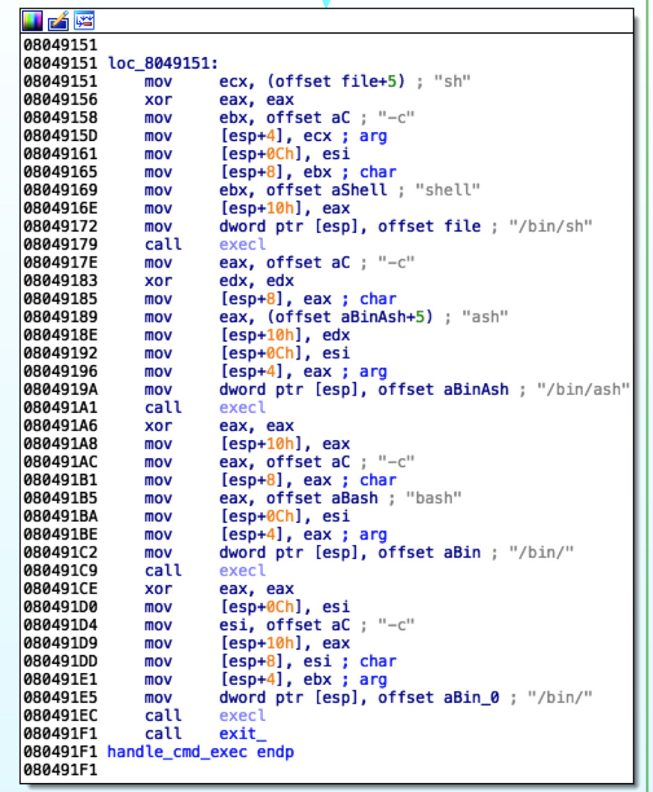

VPNFilter Stage 2/3
相对于 Stage 1，Stage 2 没有太多骚操作，更多的是为后期扩展做准备。
环境准备
与 Stage 1 相同，木马首先设置 daemon、自删除：
解密相关字符串，这里的字符串包括：版本/架构信息、公网 Tor Socks 代理地址、C2 URL信息：

加密方式也与 Stage 1 相同，唯一的区别是 Key 变更为：g&*kdj$dg0_@@7'x：
而后根据自身文件名称创建工作目录，并写入 SSL 相关密钥：
配置 Tor
在与 C2 通信之前，木马首先下载并运行 Tor：
具体的操作是通过硬编码的公网 socks 代理连接 C2 服务器，进行下载并运行：
C2 通信
在 Tor 配置完成后，通过 Tor 连接 C2 地址，样本中的是：
首先回传基本信息，通知 C2 上线，上传的基本信息包括 IP、MAC、木马版本等：
而后与 C2 通信，支持的命令包括：download、exec、reboot 等：
以 exec 为例分析，调用常见 shell 执行命令：

关于Stage 3
一些分析文章将 Stage 2 中下载的模块称为 Stage 3，个人拿到的样本中这一部分只有两个模块：
- Tor 通信：独立于主程序、X86
- 后渗透：多个漏洞利用、网络嗅探等、MIPS
但可以推断的是，还有更多的模块待发掘，或正处于编写中。
这部分是对木马功能的补充，但相较于整体而言，对其进行逆向的学习价值已不大，知其然即可。